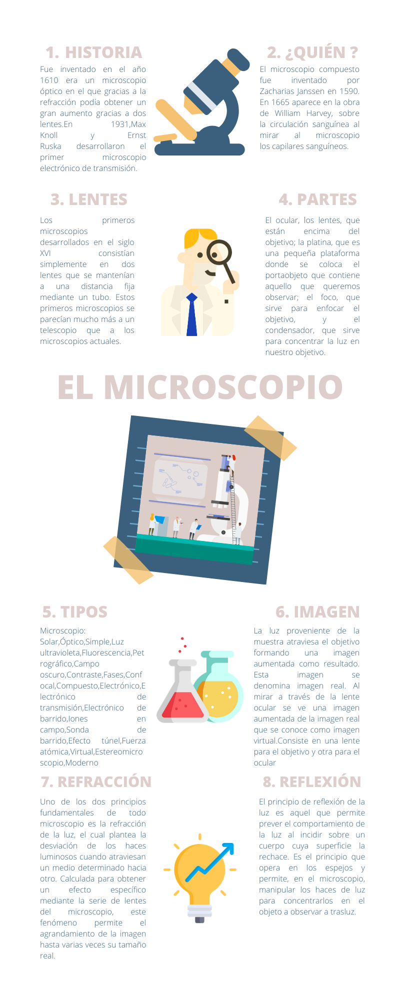

CULTIVO DE BACTERIAS
La luz nos ayuda a la formación de las bacterias pero existen ciertos procesos de ella que generan esto, algunos de ellos son la refracción o la reflexión de la luz pero para poner en evidencia como es que esto ocurre a través del siguiente video se explicará con ayuda del método científico. CLICK PARA VER VIDEO .
EL MICROSCOPIO
PARTE 1
Siguiendo la misma línea, debemos tener en cuenta que dichos microorganismos se pueden analizar a través de la observación con el microscopio, de esta manera por medio de una infografía se conocerá cómo esta herramienta es tan útil en la comunidad científica, su evolución duarante la historia y su funcionamiento desde la óptica.
PARTE 2
Por último, vamos a presentar un podcast a partir de un reportaje científico en el que se explicará el contenido de la anterior infografía presentada sobre el microscopio y su funcionamiento, especificando el estudio de los lentes (tipo de lente e imagen que forman).